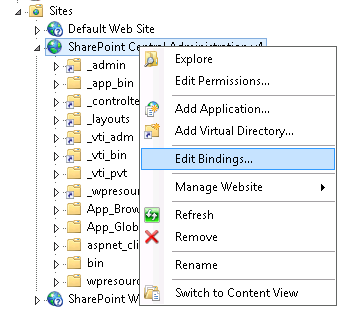

Introducción
Hoy me ha ocurrido tal cosa, que no sabría si sería capaz de recuperar la administración central de SharePoint, o había muerto definitivamente. Hasta el día de ayer, accedía a la administración central de SharePoint con una URL como esta: https://admin.mydomain.com
Donde, esta era mi configuración de Alternate Access Mappings:
| Internal URL | Zone | Public URL for Zone |
|---|---|---|
| https://admin.mydomain.com | Default | https://admin.mydomain.com |
| http://admin.mydomain.com | Default | https://admin.mydomain.com |
Lo cual quiere decir, que la URL de acceso desde el exterior es con https, pero la URL interna es https. Por lo que estoy usando la técnica SSL-Offloading para que desde mi servidor Firewall hasta los servidores de SharePoint se trabaje con http, pero desde el servidor firewall hacía afuera se haga a través de https.
Bien, el tema es que estoy haciendo un cambio de dominio, y mi nuevo dominio es newdomain en lugar de mydomain. Y lo primero que hago es cambiar la configuración en el servidor de firewall y en los DNS.
Con estos cambios, por error, consigo que la administración central quede inaccesible, debido a que el nombre https://admin.mydomain.com ya no está direccionado hacia el servidor correspondiente de SharePoint.
Cambio de dominio
Ante esta situación, tenemos dos opciones:
- Volver a pedir a Networks Team que deshagan el cambio para cambiar los AAM y los IIS Bindings antes del cambio.
- Arreglarlo con PowerShell y algo de astucia.
El punto 1 retrasaría bastante, ya que como siempre, el equipo de Networks está muy solicitado. Vamos a por el reto del punto 2: cambiar los AAM sin Central Admin!
La nueva tabla que yo quiero en los AAM para mi Central Admin es:
| Internal URL | Zone | Public URL for Zone |
|---|---|---|
| https://admin.newdomain.com | Default | https://admin.newdomain.com |
| http://admin.newdomain.com | Default | https://admin.newdomain.com |
Código
Además de hacer esto por la parte de SharePoint también tendré que cambiar los IIS Bindings para la App de la Administración Central.
1 | # Este nos muestra la tabla de AAM con los campos IncomingURL (url interna), Zone y PublicURL |
Y ahora solamente nos queda cambiar la configuración de los IIS Bindings para que refleje también el nuevo valor admin.newdomain.com en lugar de admin.mydomain.com.

Y esto es todo amigos !